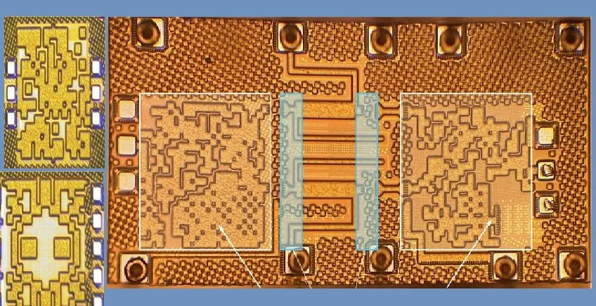

AI-designed 6G chips humans cannot explain
Originally posted on LinkedIn, January 22, 2025.
Researchers from Princeton University and the Indian Institute of Technology (IIT) used AI to design 6G communication chips capable of a terabyte per second. The chips deliver unprecedented performance through models that human engineers cannot decipher.
The technology uses an approach called Inverse Design. The algorithm starts with basic parameters such as frequency and power, then builds a custom solution without being limited by human intuition. In initial tests, the chips performed about 30% better than those created with traditional design methods.
Professor Kaushik Sengupta, who led the research, said: “The new designs are remarkable not only in their performance, but also because they completely defy engineering intuition. These are results that engineers not only did not think of, but cannot understand how they work.”
Chip design has traditionally been a long, complicated process requiring teams of experts and careful manual work. AI can cut development time from days to hours, leaving engineers free to focus on other difficult tasks. The resulting chips also set new marks for energy use and efficiency.
That creates a serious problem. The AI-generated designs are so complicated and unintuitive that engineers struggle to understand how they work. Adopting technology whose basic principles we cannot explain raises technical and ethical risks, especially when an algorithm could make a mistake in a critical design or the technology could be misused.
The biggest challenge is still ours. AI can produce solutions almost instantly and sometimes more efficiently than human engineers, but we remain responsible for testing those results and deciding whether they meet our expectations or are dangerously wrong. We are both the gatekeepers and the bottleneck in this development process.
That responsibility is not merely technical. It is urgent and critical. If we lose the ability to judge AI’s work, efficient solutions can become dangerous simply because we never understood them deeply enough. Our job is not just to approve the output, but to make sure it reflects human needs and values.
